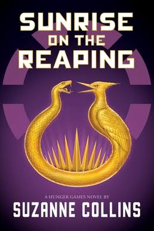

Recently, I read Sunrise on the Reaping by Suzanne Collins. It is the 5th book in the Hunger Games series. The book takes place 24 years before the original series and follows Haymitch throughout the 50th annual Hunger Games.
Personally, I really enjoyed the book. I always really liked Haymitch as a character, and getting to see how he became himself was very interesting and also heartbreaking. I was skeptical at first if this book would be rewarding to read, as we already know how it ends (considering we already know Haymitch will win), but I was shocked by just how invested I was. The characters are all very well written, and I was heartbroken by all of their deaths, even though I knew their fates from the start. The book is also a great commentary on propaganda and how real events can get twisted through the media, which is relevant to today. There were a few things in the book I thought were a little unnecessary, such as Haymitch being best friends with Katniss’ father, but the positive aspects of this story made it easy to overlook these small details. I am so excited to see the movie adaption that is coming out later this year!